Getting here
Tram 3 stops right outside at Lantern Quay. From Harborview Central it’s a ten-minute walk along the boardwalk. Quayside Garage is $9 for three hours with your ticket, and there are bike racks by the main doors.
Open daily, 9:30–17:30
Drift past glowing jellies, a three-story kelp forest and one very clever octopus. Six living worlds on Harborview’s waterfront, and an axolotl called Gilly to show you around.
Today at Tidelight
Every talk is free with your ticket. Come a few minutes early for a spot by the glass.
Pip and Marlo crack their clams while floating on their backs, and a keeper explains how otters stay warm without any blubber.
Otter Cove · 15 min
The lights go down in the jelly gallery: how moon jellies pulse, glow and get by without a brain.
Jellyfish Lanterns · 20 min
Juniper gets a brand-new puzzle box. Last week she had it open in four minutes flat.
Octopus Den · 20 min
Twenty-two little penguins waddle a lap of the Main Hall. Wave; they love an audience.
Penguin Point to the Main Hall · 15 min
A diver feeds the garibaldi and answers your questions through the glass.
Kelp Cathedral · 20 min
Meet Gilly’s real-life cousins and find out how an axolotl grows back a lost leg.
Axolotl Lagoon · 20 min
Ten calm minutes before closing: lights low, music off, just the jellies.
Jellyfish Lanterns · 10 min
Music, the Driftwood bar and the jellies at their brightest. Ages 18 and up after 18:00.
Every gallery · until 21:00
Exhibits
From sunlit kelp to the quiet glow of the deep, every gallery is built around the animals who live in it. Most visits take about two and a half hours. The otters make it hard to leave.
A dark, hushed gallery of pulsing moon jellies, sea nettles and tiny comb jellies that shimmer like rainbows.
Glow talk
A three-story kelp forest that sways in real surf. Look up through the canopy, or watch the garibaldi guard their patch.
Forest dive
Juniper, our giant Pacific octopus, opens jars, changes color when she’s curious and knows exactly which keeper brings the crab.
Enrichment
Pip and Marlo, two rescued sea otters, with a rocky pool built for rolling, cracking shells and napping paw in paw.
Breakfast
A pebble beach and a deep, clear pool for a colony of twenty-two little penguins, the smallest penguins in the world.
Parade
Smiling salamanders from the lakes of Mexico, with frilly gills and a talent for regrowing just about anything.
Meet-up
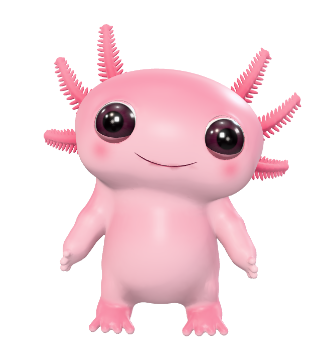
Meet Gilly
Gilly is Tidelight’s resident axolotl. Well, the cartoon one: the real ones are napping in Axolotl Lagoon. Gilly knows every feeding time, the step-free routes and the quietest hour for the jellies, and loves to talk about all of it.
Gilly lives in the corner of every page. Tap and ask anything about your visit.
Ask with your voice. Gilly answers aloud, with speech bubbles so you can read along.
On Apple Vision Pro or iPhone, Gilly swims off the page and into your space.
Tickets & hours
Pick an entry time, then stay as long as you like. Book online and skip the ticket line.
| Monday to Wednesday | 9:30–17:30 |
|---|---|
| Thursday | 9:30–21:00 |
| Friday to Sunday | 9:30–17:30 |
Last entry one hour before closing. Open every day of the year except December 25.
Plan your visit
Tidelight Aquarium, 2 Lantern Quay, Harborview. Everything below is step-free, and every question you have, Gilly has probably heard before.
Tram 3 stops right outside at Lantern Quay. From Harborview Central it’s a ten-minute walk along the boardwalk. Quayside Garage is $9 for three hours with your ticket, and there are bike racks by the main doors.
Step-free throughout, with lifts to all three levels. Borrow a wheelchair or a sensory backpack at the front desk. Every talk is captioned, and Calm Mornings on the first Sunday of the month open at 8:30 with low lights and no music.
Strollers are welcome everywhere, with stroller parking outside Otter Cove and Penguin Point. Baby changing on every level, and a quiet feeding room beside the jellies.
The Driftwood Café on Level 2 looks out over the harbor: chowder, grilled cheese, big salads and good coffee, 9:30–17:00. Picnics are welcome on the Quay deck.
How it works
There is no chat button and no chat window. Gilly is the interface: an animated axolotl who idles in the corner, answers out loud with a speech bubble that keeps pace with the voice, and listens when you talk back. The conversation behind the character is real: it runs on Stand's custom chat UI API, so an AI Stand-in answers, a person on the team can take over, and the history stays in Stand.
siteId: 'demo', Stand Chat's shared demo site, which works on any domain. Its demo Stand-in follows the page's private context but won't pretend to be a real aquarium. With your own Site ID, your own Stand-ins and team answer.stand-client.js talks to Stand: discovery, one-time session creation, sending over HTTP, replies over a WebSocket, reconnects and reload recovery. It follows the custom chat UI guide's reference client and adds typing and streamed-reply events, so Gilly can think while an answer is being written.chat.js is the interface: speech bubbles, the reply bubble, and what Gilly does in each state of the chat.voice.js speaks with speechSynthesis and listens with SpeechRecognition.mascot.js renders and animates Gilly with three.js; behaviors.js is what Gilly does and when.ar.js opens AR Quick Look and runs Gilly in the <model> element on Vision Pro.blender/ generates gilly.glb (560 KB, for the page) and gilly.usdz (3 MB, loaded only for AR).Discovery asks Stand who can answer; it's free and creates nothing. The conversation starts when the visitor sends a first message, together with the greeting Gilly already spoke and private context for whoever answers.
const api = 'https://api.stand.chat';
const query = new URLSearchParams({ siteId: 'demo', page: location.href, greetingsEnabled: 'false' });
const offer = await (await fetch(`${api}/v1/reps/find?${query}`, { credentials: 'omit' })).json();
// offer.available, offer.responderType ('standin' or 'rep'), offer.poweredByUrl…
// Later, on the visitor's first message:
const session = await (await fetch(`${api}/v1/sessions`, {
method: 'POST',
credentials: 'omit',
headers: { 'Content-Type': 'application/json' },
body: JSON.stringify({
siteId: 'demo',
page: location.href,
standinProfileId: offer.standinProfileId, // or repId for a person
initialMessage: 'When do the otters eat?',
includeOpeningGreeting: true,
openingMessage: "Oh! Hi there! I'm Gilly…", // what Gilly already said
prompt: 'Your replies are spoken aloud by Gilly, a cartoon axolotl… Today: …', // privateContext()
}),
})).json();
// Keep session.sessionId and session.visitorToken for this conversation.Messages go out over HTTP and come back over a socket. Canonical messages merge by messageId; live events let Gilly look thoughtful while an AI reply is being written.
const url = new URL(`wss://api.stand.chat/ws/sessions/${session.sessionId}`);
url.searchParams.set('token', session.visitorToken);
const socket = new WebSocket(url);
socket.onmessage = (event) => {
const data = JSON.parse(event.data);
if (data.type === 'standin.status' || data.type === 'typing') gilly.setState('thinking');
else if (data.type === 'session.closed') showEnded();
else if (data.event === 'message') mergeByMessageId(data); // then Gilly says it
};Reconnects, reload recovery, retries that never send twice, and closing versus ending a chat are all in stand-client.js. They're the unglamorous half of a custom UI: read the guide's recovery chapter before shipping your own.
for (const sentence of splitSentences(text)) { // Chrome cuts off long utterances
const u = new SpeechSynthesisUtterance(sentence.text);
u.pitch = 1.18; // a little higher: Gilly is small
u.onboundary = (e) => onProgress(sentence.start + e.charIndex); // exact, where voices report words
speechSynthesis.speak(u);
}
// Voices without word events: progress is estimated from the speaking rate.
// The same character index lights up the bubble and shapes Gilly's mouth.Each letter maps to a mouth shape (open, wide or round) that blends into Gilly's face, so the lips move with the words, even with the voice muted. The first utterance has to start inside a tap on iOS, which is why Gilly greets you when you click.
const Recognition = window.SpeechRecognition || window.webkitSpeechRecognition;
const rec = new Recognition();
rec.interimResults = true; // words appear in the bubble as you speak
rec.onresult = (e) => (input.value = [...e.results].map((r) => r[0].transcript).join(''));
rec.onend = () => input.value && send(input.value);
rec.start();Chrome sends the audio to Google to transcribe it, Safari to Apple, and Safari on Mac needs Siri turned on. Firefox has no speech recognition, so there the microphone button isn't shown.
On iPhone and iPad, AR Quick Look puts gilly.usdz on your table. On Vision Pro, Safari's <model> element shows the same file with real depth, right in the page, and you can pinch and drag it into your room.
<a rel="ar" href="gilly.usdz"><img src="gilly.png" alt="See Gilly in your room"></a>
<model src="gilly.usdz"><img src="gilly.png" alt="Gilly"></model>A USDZ holds a single animation timeline, so every mood Gilly has in the page (idle, waving, talking, listening, thinking, sighing…) was recorded from the web engine into one 46-second reel, with each clip starting and ending on the same pose. In the page, ar.js plays one clip at a time by seeking model.currentTime; Quick Look plays the whole reel as a loop. Serve USDZ as model/vnd.usdz+zip.
On Vision Pro, a <model> is drawn behind the page surface in an opaque box, and anything that comes in front of the surface is sliced off. So Gilly stands back from the surface by as far as each mood ever reaches, measured when the USDZ is built, and backs up before a flip. A CSS mask-image fades the box's edges into the page, like a spatial photo.
sensitiveNoticeText or poweredByUrl, show them.prompt is hidden from the chat but readable in the page, so pass facts that help, never credentials.gilly.glb is meshopt-compressed.This example is nearly a one-shot. Claude Opus 5.5, with max effort, in Claude Code, built it in one session from the prompt below, plus one follow-up asking for this box. It modeled and rigged Gilly with headless Blender scripts, wrote the animation engine and the chat, held real conversations with Stand's demo site in headless Chrome, judged the animation from filmstrips, and tested on the iOS and visionOS simulators. A sub-agent designed and illustrated the aquarium website in parallel, from a written brief.
A chat doesn't have to be a box in the corner. With AI writing the front end, it can be a character who lives on your site, while Stand's custom chat UI API keeps the conversation, the AI Stand-in and your team behind it.
The prompt, lightly edited
Let's add a super fancy example: an animated AR chat mascot, inspired by Meta's Muse avatars. [Two example images] Develop a unique, cute, animated avatar in Blender (its MCP server is available on this Mac). Create a custom chat UI: https://stand.chat/guide/custom-chat-ui - It's available through a 3D avatar sitting in the bottom-right corner of the page, replacing the chat button. - The avatar feels alive, but bored when not active: moving around, sitting, looking around… Draw inspiration from this meme. [The "waiting" meme] - When the avatar is tapped or clicked, it smiles and speaks out using the browser's built-in speech synthesis. - There is a speech bubble synced with this. - Another bubble lets you type your responses. If the platform easily exposes built-in speech recognition, make that available. All in all, this should feel playful. Be creative and add a suitable website for it to live in. Find a fun use case where such an avatar would feel at home. Now the hard part. We want to support AR-capable browsers, notably Apple Vision Pro, making the avatar actually 3D, and if web standards allow, letting you place it outside the page in the real environment. But it should also be usable on iPhone, Mac and Windows. On computers, we should support Safari and Chrome. Iterate this to top quality: character animations should feel natural, almost like watching a Pixar character. The UX should be polished, reliable and usable. Blender is probably in use by another chat, "Vintage Terminal chat UI". Coordinate with it to avoid conflicts.
The follow-up
This seems mostly a one-shot. Include the original prompt (clean it up as you choose) and the model used on the page, as a subtle expandable "How this was made" box. The intent is to help people create high-fidelity experiences like this on top of Stand Chat, now that AI is able to generate the front end.
If you try this yourself
demo Site ID, so every test is a real conversation, then switch to yours.blender/ rebuilds Gilly in about 20 seconds.npx degit standchat/examples/chat-mascot my-mascotSet SITE_ID in chat.js to your Site ID and rewrite privateContext() with facts about your business. To make a character of your own, start from blender/gilly.py: every shape is a few numbers in blender/anatomy.py.